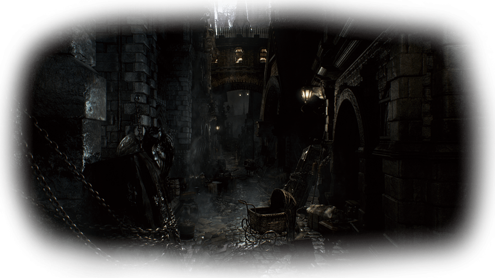
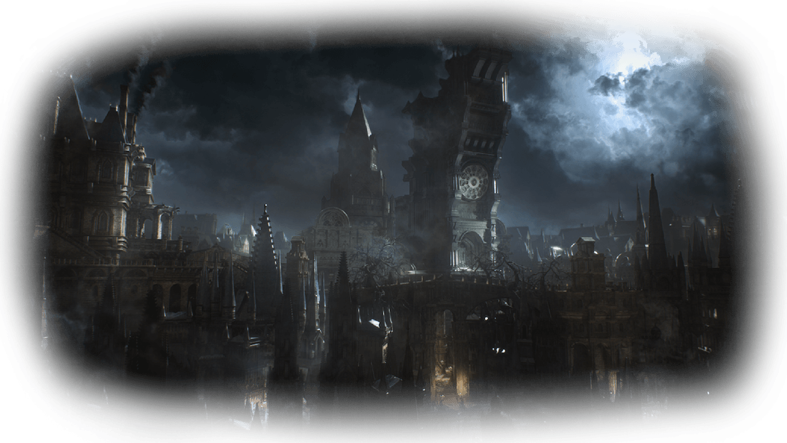
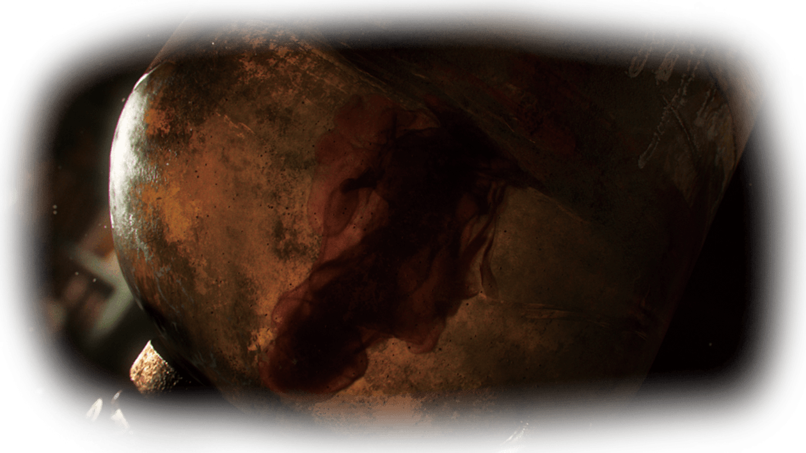
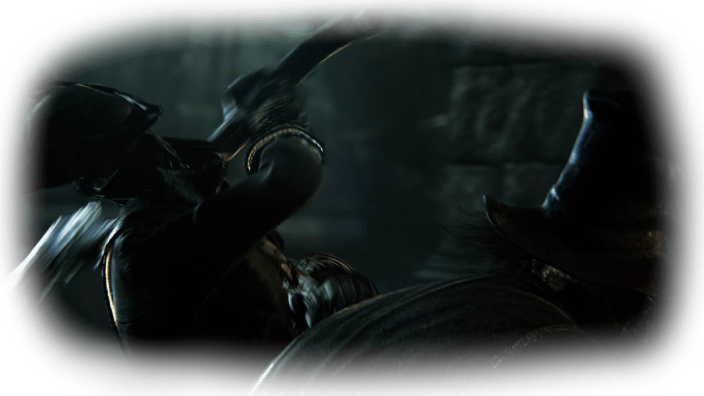
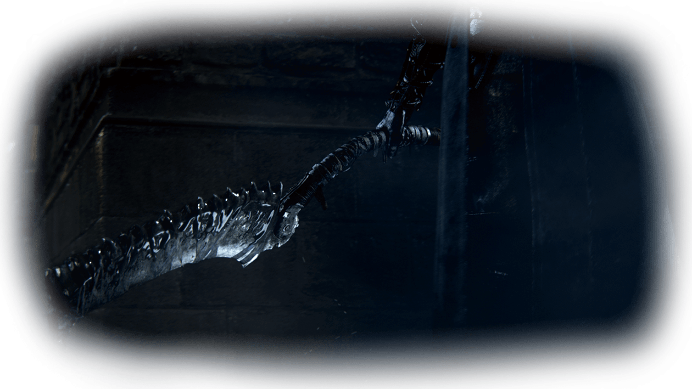
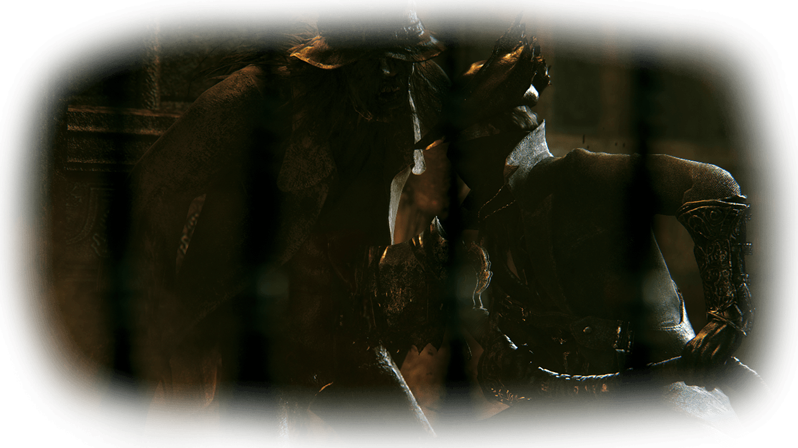

- 
- 
- 
- 
- 
- 

 CHARACTERS
CHARACTERS
一名被召唤至雅南的异乡猎人，通过血之仪式进入梦境。
由于能力出众，被威廉大师选中
打破封印(击杀愚笨蜘蛛罗姆)引发血月
并通过击杀梅高的奶妈终结了曼西斯的计划
治愈教会创始人
对古神的研究中属于激进派
曾将古神之血带出拜尔金沃斯，用于治愈教会的血疗
主张“畏惧古神之血”
相信主角有能力解除梦魇
并为主角指出了愚笨蜘蛛罗姆的所在
治愈教会分支——曼西斯学派的领导者
在亚哈革通过神秘的仪式，利用尸体复活了一名古神祇
灰发白瞳的的美丽人偶
帮助主角完成自身强化
似是有情却无情
教会猎人的创始人,曾与劳伦斯共事
他是一个进入古神梦境的猎人也是第一任猎人
不知为什么就开始在街上游荡了
攻击遇到的一切活物
这是一个瘸了腿的猎手
但是枪法很好
被亚楠之血治愈的乌鸦
变的性情暴虐,嗜食
古都亚楠
在遥远的东方,人迹罕见之地
突然间盛行起了[兽化病]
[兽化病]㦬患者,只余兽性
在人们丧失兽性的夜里,[狩人]开始狩猎
主人公则是一名从远方求医而来的一名"病人"